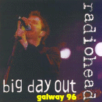

Big Day Out In Galway
WR 005
Tracks 1-13 from Galway Bay Festival, 07/28/96
<1> My Iron Lung (starts late, listed as "Iron Lung")
<2> Bones
<3> Bulletproof.. I Wish I Was
<4> Planet Telex
<5> Black Star
<6> High And Dry
<7> Lucky
<8> Nice Dream
<9> Creep
<10> The Bends / Fake Plastic Trees
<11> Anyone Can Play Guitar
<12> Street Spirit [Fade Out]
<13> Just
Tracks 14-15 acoustic demos, possibly GLR session
<14> Street Spirit [Fade Out]
<15> Just
Tracks 16 from BBC Radio One session
<16> Maquiladora
Type of recording : Radio Broadcast
Quality : Good
Notes : Large festival crowd obvious, not a
very exciting set list. Very good versions of Anyone Can Play Guitar and
Just. Last three tracks are very good (especially the acoustic Just) - even though the quality is not
perfect.